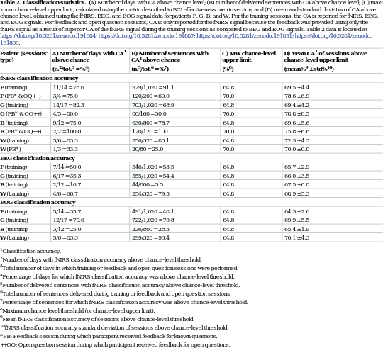
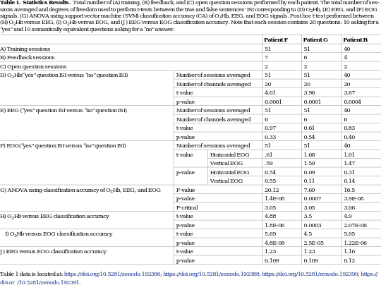

|

corpus-oa-validation/10.1371_journal.pbio.1002593/tables/table2/table.svg.png
|
| ^{1 Classification accuracy.} ^{2 Number of days with fNIRS classification accuracy above chance-level threshold.} ^{3 Total number of days in which training or feedback and open question sessions were performed.} ^{4 Percentage of days for which fNIRS classification accuracy was above chance-level threshold.} ^{5 Number of delivered sentences with fNIRS classification accuracy above chance-level threshold.} ^{6 Total number of sentences delivered during training or feedback and open question sessions.} ^{7 Percentage of sentences for which fNIRS classification accuracy was above chance-level threshold.} ^{8 Maximum chance level threshold (or chance-level upper limit).} ^{9 Mean fNIRS classification accuracy of sessions above chance-level threshold.} ^{10 fNIRS classification accuracy standard deviation of sessions above chance-level threshold.} * FB: Feedback session during which participant received feedback for known questions. ++OQ: Open question session during which participant received feedback for open questions. |
corpus-oa-validation/10.1371_journal.pbio.1002593/tables/table2/table.svg.html
|
|

corpus-oa-validation/10.1371_journal.pbio.1002593/tables/table1/table.svg.png
|
| Table 1 data is located at: https://doi.org/10.5281/zenodo.192386; https://doi.org/10.5281/zenodo.192388; https://doi.org/10.5281/zenodo.192390; https:// |
corpus-oa-validation/10.1371_journal.pbio.1002593/tables/table1/table.svg.html
|